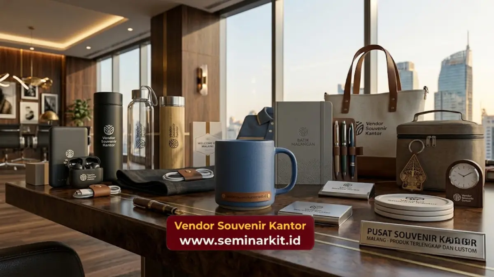

Harga souvenir kantor murah pada dasarnya ditentukan oleh kombinasi jenis bahan, teknik cetak logo, jumlah unit pesanan, dan tingkat kerumitan desain.
Semakin besar volume pesanan, umumnya semakin efisien harga per unit yang diperoleh perusahaan.
Memahami komponen ini membantu tim procurement menyusun anggaran secara lebih akurat.
- Harga souvenir kantor murah dipengaruhi oleh bahan, teknik cetak, dan volume pesanan.
- Sistem harga bertingkat membuat harga per unit menurun seiring bertambahnya jumlah pesanan.
- Perbandingan harga sebaiknya mempertimbangkan kualitas, bukan hanya nominal termurah.
- Anggaran yang jelas sejak awal mempermudah proses seleksi produk dan negosiasi harga.
Menyusun anggaran souvenir kantor membutuhkan pemahaman yang jelas mengenai komponen apa saja yang membentuk harga akhir produk.
Tanpa pemahaman ini, perusahaan berisiko memilih opsi yang terlihat murah di permukaan namun ternyata memiliki biaya tambahan tersembunyi, seperti ongkos cetak logo atau biaya pengiriman dalam jumlah besar.
Berdasarkan pengamatan umum industri merchandise korporat, komponen biaya cetak logo dapat menyumbang porsi signifikan dari total harga per unit, terutama untuk teknik cetak yang membutuhkan proses tambahan seperti bordir atau laser engraving dibanding sablon standar.
Komponen Utama Pembentuk Harga Souvenir Kantor
Harga souvenir kantor murah terbentuk dari beberapa komponen utama, yaitu biaya bahan baku, biaya proses cetak atau personalisasi logo, biaya kemasan, serta biaya pengiriman ke lokasi perusahaan.
Bahan baku menjadi komponen dasar yang paling menentukan kisaran harga awal sebuah produk. Bahan seperti plastik food grade atau kanvas umumnya memiliki struktur biaya lebih rendah dibanding bahan seperti stainless steel atau kulit sintetis premium.
Selain bahan, proses personalisasi logo turut menambah biaya sesuai tingkat kerumitan desain yang diminta perusahaan.
Biaya kemasan juga perlu diperhitungkan, terutama untuk souvenir yang akan diberikan langsung kepada klien atau mitra bisnis dalam acara formal, di mana tampilan kemasan turut memengaruhi kesan profesional yang ingin disampaikan.
Jenis Bahan Apa yang Membuat Souvenir Kantor Lebih Terjangkau?
Jenis bahan yang umumnya membuat souvenir kantor lebih terjangkau adalah plastik food grade, kanvas, dan kertas daur ulang, karena proses produksinya lebih sederhana dibanding bahan logam atau kulit.
Meski tergolong ekonomis, bahan-bahan tersebut tetap dapat menghasilkan tampilan produk yang rapi dan profesional apabila dipadukan dengan desain dan teknik cetak yang tepat.
Pemilihan warna dan finishing yang konsisten dengan identitas merek perusahaan juga membantu meningkatkan kesan kualitas meski menggunakan bahan dasar yang ekonomis.
Pengaruh Teknik Cetak terhadap Harga Souvenir Kantor
Teknik cetak logo memiliki pengaruh besar terhadap harga akhir souvenir kantor murah, karena setiap metode memiliki tingkat kerumitan proses dan biaya produksi yang berbeda.
Sablon umumnya menjadi teknik cetak paling ekonomis karena prosesnya relatif sederhana dan cocok untuk pesanan dalam jumlah besar.
Sementara itu, teknik bordir dan laser engraving membutuhkan proses tambahan yang lebih detail, sehingga cenderung menambah biaya produksi meski memberikan kesan hasil akhir yang lebih premium.
Apakah Teknik Cetak Memengaruhi Daya Tahan Logo pada Souvenir?
Ya, teknik cetak turut memengaruhi daya tahan tampilan logo pada produk souvenir dalam jangka panjang, tergantung jenis bahan dan cara penggunaan produk sehari-hari.
Teknik seperti laser engraving atau bordir umumnya memberikan hasil yang lebih tahan lama dibanding sablon, terutama untuk produk yang sering terkena gesekan atau pencucian, seperti tumbler dan tas kanvas. Pemilihan teknik cetak sebaiknya disesuaikan dengan jenis produk dan intensitas penggunaannya.

Cara Membandingkan Harga Souvenir Kantor Secara Efisien
Cara membandingkan harga souvenir kantor secara efisien adalah dengan memperhatikan spesifikasi bahan, teknik cetak, jumlah unit, serta layanan tambahan seperti kemasan dan pengiriman, bukan hanya melihat angka nominal termurah.
Perbandingan yang hanya berfokus pada harga tanpa memperhatikan spesifikasi produk berisiko menghasilkan keputusan yang kurang tepat, karena dua produk dengan harga serupa dapat memiliki kualitas bahan dan daya tahan yang sangat berbeda.
Apa yang Harus Diperhatikan Selain Harga Saat Membandingkan Souvenir?
Selain harga, perusahaan perlu memperhatikan kualitas bahan, konsistensi warna cetak, waktu produksi, serta reputasi dan pengalaman vendor dalam menangani pesanan dalam skala besar.
Kombinasi faktor-faktor tersebut menentukan apakah harga yang ditawarkan benar-benar sepadan dengan nilai produk yang diterima, sehingga perusahaan tidak hanya terpaku pada angka termurah semata.
Strategi Mengoptimalkan Anggaran Souvenir Kantor
Strategi mengoptimalkan anggaran souvenir kantor murah dapat dilakukan dengan menentukan prioritas jenis produk, memesan dalam volume yang sesuai kebutuhan riil, serta merencanakan pemesanan jauh sebelum tenggat waktu acara.
Menentukan prioritas produk membantu perusahaan mengalokasikan anggaran pada item yang memberikan nilai fungsional dan branding tertinggi, alih-alih membagi anggaran secara merata pada terlalu banyak jenis produk sekaligus.
Perencanaan waktu yang matang juga membantu menghindari biaya tambahan akibat produksi kilat menjelang acara.
Apakah Konsultasi dengan Vendor Membantu Menekan Biaya Souvenir?
Ya, konsultasi langsung dengan vendor dapat membantu perusahaan menemukan kombinasi bahan, teknik cetak, dan volume pesanan yang paling sesuai dengan anggaran tanpa mengorbankan kualitas hasil akhir.
Vendor berpengalaman umumnya dapat memberikan rekomendasi alternatif bahan atau teknik cetak yang lebih efisien berdasarkan kebutuhan spesifik acara perusahaan, sehingga anggaran dapat dialokasikan secara lebih tepat sasaran.
Jika perusahaan Anda ingin mendapatkan gambaran harga yang jelas dan sesuai kebutuhan, tim vendorsouvenirkantor.web.id siap membantu menyusun estimasi anggaran souvenir kantor murah secara detail dan transparan.
Kesimpulan
- Harga souvenir kantor murah ditentukan oleh kombinasi bahan, teknik cetak, dan volume pesanan.
- Perbandingan harga sebaiknya memperhitungkan spesifikasi produk secara menyeluruh, bukan hanya nominal termurah.
- Perencanaan anggaran dan waktu pemesanan yang matang membantu mengoptimalkan efisiensi biaya.
- Konsultasi dengan vendorsouvenirkantor.web.id dapat membantu perusahaan menyusun estimasi anggaran yang transparan dan sesuai kebutuhan.

Banner promosi: klik gambar untuk langsung terhubung ke WhatsApp tim sales.